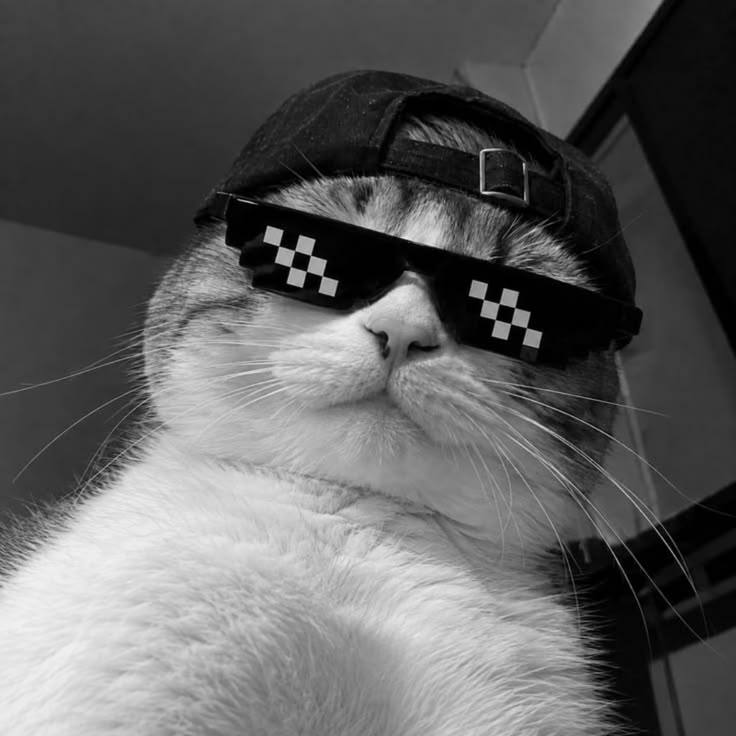
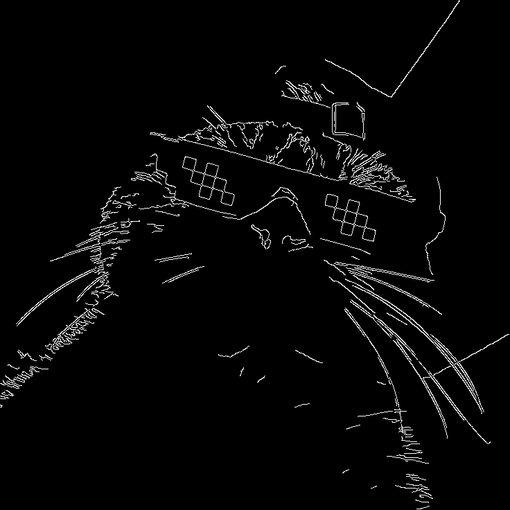
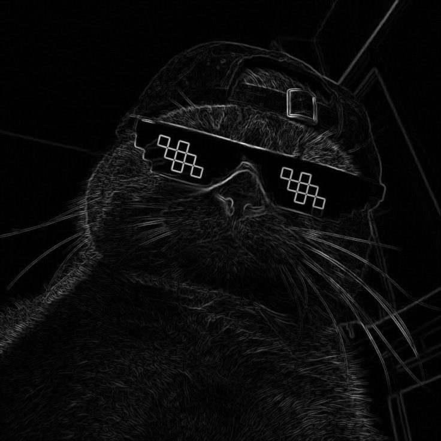

Quiet the noise
A 3 × 3 Gaussian blur reduces small intensity variations before the gradients are calculated.
From a photograph to its defining lines. Discover how Sobel and Canny turn changes in light into the boundaries a computer can see.


G = √(Gx² + Gy²)An edge is a rapid change in image intensity. It can mark an object boundary, a surface detail, a shadow, or texture. Edge detection extracts these changes to describe structure with fewer visual details.
This activity compares Sobel’s gradient magnitudes with Canny’s thin, thresholded boundaries. Both start from the same grayscale image and Gaussian smoothing.
A 3 × 3 Gaussian blur reduces small intensity variations before the gradients are calculated.
Derivatives along x and y combine into an edge-strength map with varying brightness.
G = √(Gx² + Gy²)Non-maximum suppression and two thresholds select thin edges connected to strong responses.
Sobel preserves gradient strength. Canny produces a binary decision: edge or no edge.
The handout’s objective, broken into three practical learning outcomes.
Load an image in grayscale and apply Gaussian smoothing to reduce noise.
Calculate Sobel derivatives and magnitude, then apply Canny with two thresholds.
Explain the differences and connect edge extraction to detection, segmentation, and feature extraction.
Experiment 01 · Sobel and Canny edge detection. Use the activity settings first, then explore how smoothing and thresholds affect the same input.
Or drop an image here · JPG, PNG, WebP · up to 15 MiB / 6 million pixels · processed locally
—Gradient magnitudeBinary edge mapThe same grayscale input is used for both methods. Results are generated from actual image pixels.
Gx responds strongly to vertical boundaries; Gy responds strongly to horizontal boundaries. Signed derivative previews use gray for zero, dark for negative, and light for positive values. Each derivative has its own symmetric display scale; compare structure, not brightness across these previews.
Real OpenCV, running locally. Both detectors run in a Web Worker using the bundled OpenCV.js runtime. Sobel uses floating-point derivatives; Canny uses a 3 × 3 aperture and its default L1 gradient. Browser image decoding and floating-point precision can produce small differences from Python.
Measurements from the most recent live run will appear here.
| Run / input | Blur | Canny thresholds | Edge density | Time |
|---|---|---|---|---|
| Run the experiment to record your observations. | ||||
Latest five runs retained in memory · export to keep measurements after closing this page
The handout names input.jpg but does not contain that photo. This is your cat sample from the completed activity, processed with the handout’s 3 × 3 blur, 3 × 3 Sobel, and Canny thresholds 100 / 200.

Sobel retains many fur details as faint gradients. Canny emphasizes the sunglasses, whiskers, and selected silhouette segments while discarding many weaker responses. Some boundaries remain incomplete at these thresholds.
The handout asks for one program and an explanation of the resulting edge maps. The first two answers address those requirements; the rest explain the pipeline.
Download answersLoad the image in grayscale, apply a 3 × 3 Gaussian blur, compute Sobel derivatives in x and y, and combine them with cv2.magnitude. Apply cv2.Canny(img_blur, 100, 200) to the same blurred input. Display the original grayscale image, Sobel magnitude, and Canny edges side by side.
Sobel produces a continuous gradient-magnitude map: stronger changes appear brighter, and boundaries can be thick. Texture and remaining noise also generate gradients. Canny thins local maxima and uses double thresholding with hysteresis to produce a binary map. It generally gives thinner, more selective edges, but faint boundaries may be lost and outlines are not guaranteed to be closed.
Noise creates abrupt pixel changes that can look like edges. Gaussian smoothing reduces these small variations. Stronger smoothing can suppress fine texture but can also soften or remove useful detail. The activity uses a 3 × 3 kernel with automatic sigma.
Gx approximates the intensity derivative along x, responding strongly to vertical boundaries. Gy approximates the derivative along y, responding strongly to horizontal boundaries. Their combined magnitude is √(Gx² + Gy²). Floating-point output preserves negative derivatives before the magnitude is calculated.
Responses above the upper threshold are strong edges. Responses between the thresholds are retained when connected to strong edges; responses below the lower threshold are rejected. Lower thresholds can retain more detail and noise. Higher thresholds can discard weak boundaries. These are gradient thresholds, so they are not restricted to the 0–255 grayscale range.
The genuine Python reference shows more fur texture in Sobel’s varying-intensity output. Canny produces thin white boundaries around the sunglasses, whiskers, and some silhouette segments. It suppresses many weak fur responses, but some outlines remain incomplete. This observation describes the reference cat image at 100 / 200; other inputs and settings may behave differently.
Sobel and Canny identify intensity changes, but describe them differently. Sobel preserves gradient strength; Canny adds thinning and threshold-based selection to emphasize boundaries.
The cat reference makes this visible: fur texture remains in the Sobel magnitude while Canny favors more prominent contours. Gaussian smoothing and threshold choices affect which details survive. These techniques build a foundation for object detection, segmentation, and feature extraction.
Try another perspective